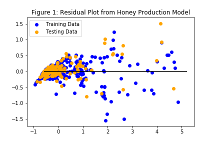
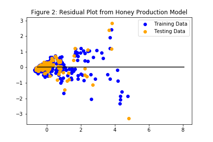

Documentation
We obtained a dataset of 'Honeybees and Neonicotinoid Pesticides' from Kaggle.com for our machine learning project. Original dataset contained 761 rows and 16 columns with state name, year, honeybee colony number, honey production data, and the usage of neonicotinoid pesticides etc.
We made two machine learning models to predict the total honey production (unit is lb) and the production value (unit is $). For the honey production model, we used honeybee colony number and all six neonicotinoid variables from the original dataset as x variables. For the production value model, we used honeybee colony number, total honey production, and all six neonicotinoid variables from the original dataset as x variables. X and y variables were preprocessed with standard scaler. We used sklearn.linear_model with Linear Regression, Lasso, Ridge, and ElasticNet Models for the machine learning process, and compared the MSE and r2 values. Because we obtained similar MSE and r2 values from the models, we decided to use all models to predict the y variables.


| Table1: MSE and r2 Values from Honey Production | ||
|---|---|---|
| Models | MSE | r2 |
| Linear Regression | 0.006 | 0.910 |
| Lasso | 0.058 | 0.916 |
| Ridge | 0.062 | 0.910 |
| ElasticNet | 0.059 | 0.915 |
| Table 2: MSE and r2 Values from Production Value | ||
|---|---|---|
| Models | MSE | r2 |
| Linear Regression | 0.213 | 0.756 |
| Lasso | 0.204 | 0.766 |
| Ridge | 0.213 | 0.756 |
| ElasticNet | 0.201 | 0.770 |
References
Resources used for analysis, both using Kaggle and data.world sets ranging in years before the start of CCD, with the first reported case being in 2006, and going up to 2019 with some data sets. The image recognition data set was separated into the 4 different categories for classification (Bee, Wasp, insect, or other), and the model was created using these metrics to allow for image upload by the end user to be categorized into the 4 groups.
References:
- Honey Production in the USA (1998-2012): Honey Production Figures and Prices by National Agricultural Statistics Service
- This dataset provides insight into honey production supply and demand in America by state from 1998 to 2012.
- Honey production data was published by the National Agricultural Statistics Service (NASS) of the U.S. Department of Agriculture.
- Data Analysis of Honey Production
- This analysis project used the same data set as "Honey Production in the USA (1998-2012)"
- Our team drew inspiration from some of the visualizations presented in this project.
- Honeybees and Neonic Pesticides: Are Neonic pesticides connected to decline of honeybee colonies?
- This dataset also used data from Honey Production in the USA, extended to the period 1998-2017. Also, it joined data from USGS's Pesticide National Synthesis Project, allowing evaluation of the statistical connections between Honey Production and the use of Neonicotinoid (neonic) pesticides.
- This project drew from this dataset to create visualizations, as well as performing machine learning prediction and analysis
- Bee Colony Statistical Data from 1987 - 2017
- Bee Colony Survey Data by State data was retrieved from the United States Department of Agriculture National Agricultural Statistics Service Quick Stats Dataset.
- Bee Colony Loss file from the @makeovermonday dataset 2018w18-bee-colony-loss.
- Bee or wasp?: 19480 Hand curated photos of bees, wasps and other insects.
- Hand-curated, close-up photos of bees, wasps, and other insects, used to teach the program to distinguish bees from wasps.
- Our team drew much inspiration and information from this project in our machine-learning project to distinguish bees from other insects.